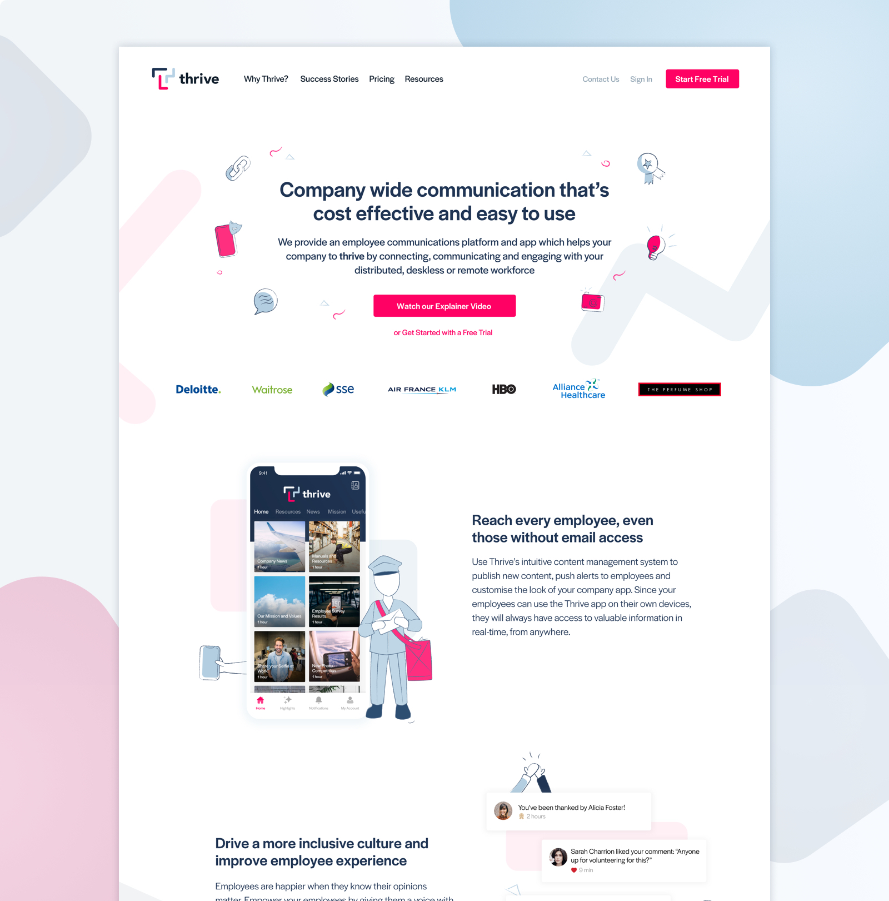
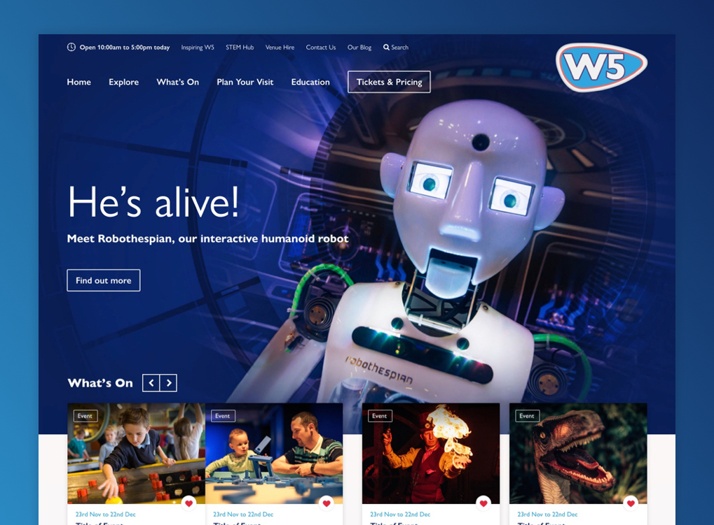

I work to understand users to design better experiences for them. Check out this selection of my design work.

Thrive - Company wide communication
Integer posuere erat a ante venenatis dapibus posuere velit aliquet. Duis mollis, est non commodo luctus, nisi erat porttitor ligula, eget lacinia odio sem nec elit.
Web Design, Front-end Development, Craft CMS Integration
Thrive Mobile - Reach every employee
User Research, UI Design, Usability Testing

W5 - Science & Discovery
User Research, Web Design